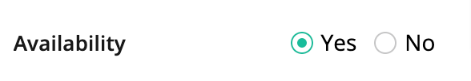

<div class="dl-preview-header zc-live-clearfix">
    <div>
        <h2>Radio button</h2>
        <h4>Est duis eiusmod anim amet ullamco et amet</h4>
    </div>
</div>
<div class="dl-preview-body-wrapper zc-live-clearfix">
    <div class="dl-preview-body">
        <!--component-->
        <div class="dl-preview-content" id="primary-button">
            <div class="zc-live-clearfix">
                <h3>Radio Button</h3>
                <!-- <h4>A button indicate primary state with specific color</h4> -->
            </div>
            <div class="dl-component-wrapper">
                
            </div>
        </div>
        <!--component-->


        <h2>Guideline missed fields</h2>

    </div>
    <div id="dl-right-nav" class="dl-rightside-nav">
        <div class="asdf">
            <h3>Button</h3>
            <ul onclick="myFunction(event)">
                <li>
                    <a href="#primary-button" tabindex="1" aria-label="Jump to Primary button">Primary button</a>
                </li>
            </ul>
        </div>
    </div>
</div>
</div>